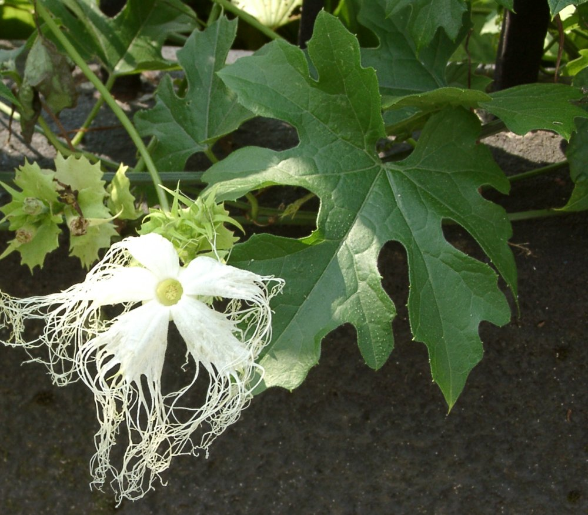

清冠一號發展
WHO從中國官方網站取得關於武漢市「病毒性肺炎病例」的媒體聲明。
WHO駐中國國家代表處從武漢市衛生委員會的網站上獲取了關於中國武漢市“病毒性肺炎”病例的媒體聲明。
中國宣布分離出新病毒，命名為新型冠狀病毒
中國武漢地區新型冠狀病毒感染肺炎出現首例死亡個案
「嚴重特殊傳染性肺炎」列為臺灣第五類法定傳染病
「因應中國武漢地區不明原因肺炎基層診所因應及處置原則」重點如下：
- 準備規劃：掌握最新相關資訊，參閱門診感染管制指引，預先做好規劃。
- 自我防護：配戴外科口罩，落實手部衛生。
- 主動詢問：診間門口或掛號檯告示，提醒病患主動告知旅遊史、職業別、接觸史及是否群聚(TOCC)。
- 病患分流：發現疑似個案，請病人佩戴外科口罩，使用獨立診間。
- 啟動公衛：撥打 1922 防疫專線協助，依指示轉診個案。
一種中藥組方用於治療冠狀病毒感染疾病 (臺灣清冠一號; NRICM101)
國家中醫藥研究所發布清冠一號研發成果
國家中醫藥研究所發布本院所研發之「清冠一號」徵求技術轉移說明會
邀請台灣中藥工業同業公會及台灣製藥工業同會公會之中藥廠，針對「清冠一號」技術進行技術轉移招募說明會。
說明會舉行時間為2020年7月31及8月5日，於國家醫藥研究所舉行。
衛福部發布COVID-19確診個案居家照護使用公費「臺灣清冠一號」申請流程
為強化輕重症分流收治，確保醫療量能及病人能即時獲得醫療照護，衛生福利部提供COVID-19確診個案居家照護者使用公費「臺灣清冠一號」，相關申請流程（附件）如下：
另收治於醫院或加強版集中檢疫所/防疫旅館之確診個案，若有使用「臺灣清冠一號」需求，亦可請主治醫師會診中醫師，經中醫師依其臨床症狀及評估治療效益與風險後，開立公費「臺灣清冠一號」提供口服治療，協助病人減緩症狀。
-
一、預約視訊診療得採以下方式：
1.由地方政府指定責任院所：個案可連繫責任院所，請該院所協助安排中醫師通訊診療評估個案狀況。
2.民眾自行預約：可利用中醫師全聯會網頁查詢提供通訊診療院所名單及聯絡方式；或撥打22縣市中醫師公會專線協助媒合住所附近中醫院所進行通訊診療。 -
二、診療後之領藥/取藥方式：
個案可委託親友至通訊診療之中醫院所領藥，或由通訊診療之中醫院所送藥至個案住所。
另收治於醫院或加強版集中檢疫所/防疫旅館之確診個案，若有使用「臺灣清冠一號」需求，亦可請主治醫師會診中醫師，經中醫師依其臨床症狀及評估治療效益與風險後，開立公費「臺灣清冠一號」提供口服治療，協助病人減緩症狀。
『新中藥複方「台灣清冠一號（NRICM101）」研發策略與成果』獲得中華民國科技部「2021未來科技獎」
增列修訂「公費 COVID-19 治療用臺灣清冠一號申請補助方案」 適用條件
為提升公費補助「臺灣清冠一號」藥品治療效益，本部於7月4日召開「『臺灣清冠一號』公費補助對象研商會議」，嚴重特殊傳染性肺炎中央流行疫情指揮中心遂依開會議結論，修訂發布「公費COVID-19治療用臺灣清冠一號申請補助方案」，並自111年9月15日生效。
上開補助方案經中華民國中醫師公會全聯會111年9月8日向本部提出建議意見，經本部中醫藥司9月9日上午與王政務次長開會討論，考量中醫診療特性，原第二點適用條件之公費補助對象增列第（三）項「確診新冠肺炎呈現任一中醫急迫病勢：1.高熱不退(體溫39°C以上持續2日)；2.咳嗽明顯，兼具喘症；3.咽痛嚴重，飲食困難。」；12歲以上(孕婦除外)符合前開條件症狀者，均可由中醫師開立公費臺灣清冠一號。
上開補助方案經中華民國中醫師公會全聯會111年9月8日向本部提出建議意見，經本部中醫藥司9月9日上午與王政務次長開會討論，考量中醫診療特性，原第二點適用條件之公費補助對象增列第（三）項「確診新冠肺炎呈現任一中醫急迫病勢：1.高熱不退(體溫39°C以上持續2日)；2.咳嗽明顯，兼具喘症；3.咽痛嚴重，飲食困難。」；12歲以上(孕婦除外)符合前開條件症狀者，均可由中醫師開立公費臺灣清冠一號。
臺灣清冠一號(NRICM101)榮獲三大獎 : 未來科技獎、藥物科技研究發展獎和國家新創獎
臺灣清冠一號(NRICM101)榮獲三大獎
1. 科技部2021未來科技獎
2. 衛福部/經濟部藥物科技研究發展獎銀質獎
3. 第18屆國家新創獎--學研新創獎
1. 科技部2021未來科技獎
2. 衛福部/經濟部藥物科技研究發展獎銀質獎
3. 第18屆國家新創獎--學研新創獎
清冠一號藥方組成

黃芩

魚腥草

栝蔞實

北板藍根

厚朴

薄荷

荊芥

桑葉

防風

甘草